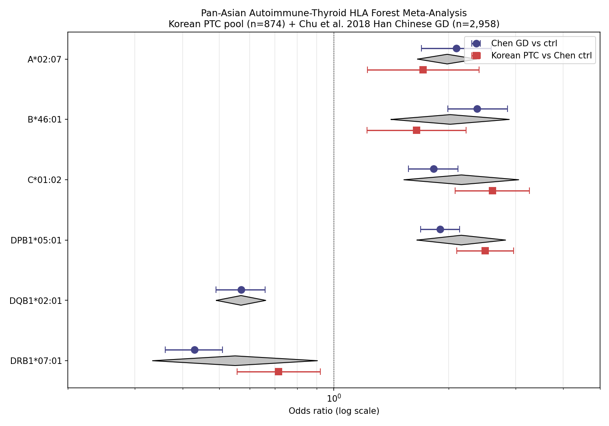
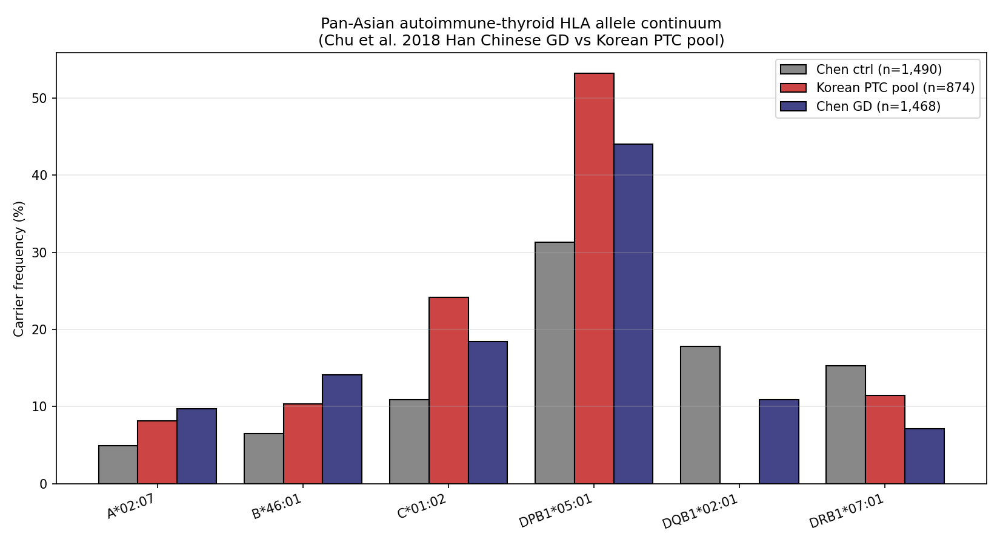

53.2% Korean PTC > 44.0% Han Chinese GD > 31.3% Han Chinese ctrl — Korean 환자가 Han Chinese GD case 보다도 더 risky 한 HLA 구성. Pooled OR 2.16 [1.65–2.83] random-effects DerSimonian-Laird. Population-specific autoimmune-thyroid susceptibility — Korean PTC ≠ Chinese GD ≠ EUR Hashimoto's. Bundang outreach + Paper 1·2B·3 정리 후 unlock.
한 줄 핵심
Korean GD HLA architecture 가 Han Chinese GD ≠ Korean GD ≠ Korean PTC ≠ EUR Hashimoto's 의 risk continuum 을 보인다. DPB1*05:01 carrier 53.2% Korean PTC > 44.0% Han Chinese GD > 31.3% Han Chinese ctrl — population-specific autoimmune-thyroid susceptibility. cookHLA Nat Commun cross-disease pipeline 의 thyroid 적용.
왜 backlog 인가 (지금 안 하는 이유)
Korean GD prospective cohort 에 대한 Bundang outreach 응답 대기; cookHLA SNP 기반 imputation 에는 SNP genotyping data 필요 (현재 RNA-seq imputation 만 보유). 따라서 (a) Bundang 데이터 access 확보, (b) Paper 1·2B·3 정리, (c) Yu 추가 미팅 input 후 unlock. 그동안 v8 outline 의 R1 forest + D3 pan-Asian 논의 + F1 pan-Asian forest figure 는 parking material 로 보존.
Status
Backlog (4/4 entry condition gated). Renumbered Paper 3 → Paper 4 on 2026-05-04.
Substrate
Korean PTC pool n=874 vs Chu et al. 2018 J Med Genet 55(10):685–692 (n=2,958: 1,468 GD vs 1,490 ctrl)
Future cohort
Bundang prospective Graves' cohort (Yu professor outreach pending)
The Pan-Asian HLA architecture of Graves' disease shows a Korean-specific risk continuum (DPB1*05:01 53.2% Korean PTC > 44.0% Han Chinese GD > 31.3% Han Chinese ctrl), suggesting population-specific autoimmune-thyroid susceptibility distinct from European Hashimoto's. cookHLA-imputed haplotype structure (Cook 2021 Nat Commun) applied to Korean Graves' / PTC cohorts.
Carried-over from v8 outline (parking material)
R1 — Pillar 1 Pan-Asian HLA cohort. Korean PTC vs Chu 2018 3-arm forest; DPB1*05:01 OR vs ctrl = 2.50 (95% CI 2.07–3.02, p=4×10⁻²⁶); pooled OR 2.16 [1.65–2.83] random-effects DerSimonian-Laird; 6 alleles direction-consistent.
M9 — Pan-Asian HLA forest meta methods. arcasHLA 4-digit IPD-IMGT/HLA v3.44.0 + Korean PTC pool n=874 + Chu 2018 published OR; DerSimonian-Laird random-effects + I² + Cochran's Q; 4-scenario sensitivity (full / excl GSE286332 / Lee only / K2 only).
F1 — Pan-Asian HLA forest plot. 3-arm forest figure.

v8 F1 → Paper 4 F1 (parking) · 3-arm forest: Korean PTC vs Chu 2018 GD vs Han Chinese ctrl. DerSimonian-Laird random-effects + I² + Cochran's Q · DPB1*05:01 OR vs ctrl = 2.50 (95% CI 2.07–3.02, p=4×10⁻²⁶). Pooled OR 2.16 [1.65–2.83]. Backlog only · marathon 동안 작업 금지.

Parking · 3-cohort allele frequency. Korean PTC pool 53.2% (Lee 52.1% / K2 56.2% / GSE286332-PTC 55.6% — perfect homogeneity I²=0%) > Han Chinese GD 44.0% > Han Chinese ctrl 31.3%. Risk continuum 시각화.
Forbidden during Paper 1/2/3 work: Paper 4 backlog 은 Paper 1·2B·3 settle 후에만. 지금 GD / Chu 2018 / DPB1*05:01 narrative 작성 금지. v8 R1 / D3 / F1 / M9 contents 는 parking material 로 분류.
Anchor files
Memoryv19_paper4_GD_backlog.md
Legacy statusproject/STATUS_PAPER3_2026_05_02.md (was Korean GD, now Paper 4)
Korean K2 calibration Memory v17_korean_k2_calibration (TPM inflation gotcha)
Cross-paper bridges:
Paper 4 = v8 의 Pillar 1 forest 직속 후신.
Paper 2B 는 같은 Korean PTC pool n=874 substrate 사용하되 비교 baseline 만 다름 (AFND South Korea vs Chu 2018 GD).
Paper 1 은 Korean replication (Lee 2024 GSE213647) 만 cite, GD comparator 는 안 cite.
Paper 3 의 cookHLA reservation 영역.